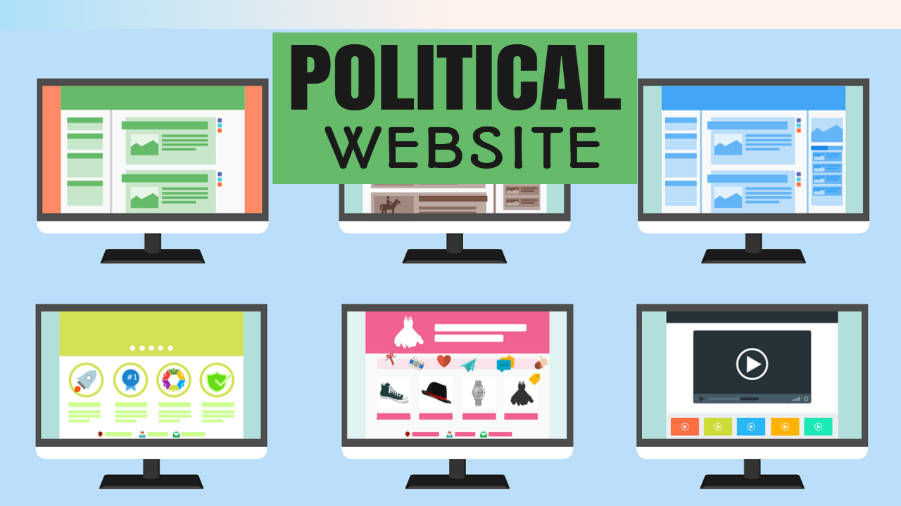

A Political Website Helps Your Local Election
by Bob Brady
Posted on 11-05-2021 03:56 PM

On This Page
- I already have a domain name. Can I use it with Campaign Builder?
- Will my website be easy to read on mobile phones?
- Can I use a Campaign Builder for an issue awareness campaign?
- I'm in Canada - can I still use a Campaign Builder?
- What if I don't need to keep my site online after my campaign, but I do want to save my website for my next election?
- Best Political Campaign Websites of 2020
- How do I design political sites like these?
- We've been a leader in political websites for more than a decade.
- NMC Client Named One of Best Congressional Websites in 2010
I already have a domain name. Can I use it with a Campaign Builder?
Yes! we include a free domain name (normally $15) with every signup. When you register with us, we'll automatically configure your domain for use with a campaign builder. You'll own this domain name, and can even use it after your campaign has ended. We also include a free ssl certificate so that your visitors can access your site securely.
Will my website be easy to read on mobile phones?
Powerful + user-friendly we’ve built our unique website templates using squarespace, a powerful, user-friendly content management system. We think it’s perfect for political campaigns. Completely responsive all our designs are mobile-friendly and optimized with 100% responsive design. We’ve made sure your site will look good on any device, including tablets and smartphones. No coding required did we mention that our websites are easy-to-use? we’ve designed them knowing that while your team will be wearing a lot of hats, web developer is most likely not one of them.
Can I use a Campaign Builder for an issue awareness campaign?
Despite the challenges faced by the healthcare community in early 2020, the hospital campaign saw record participation numbers. 1,700 small and large hospitals worked with donation organizations to promote organ, eye, and tissue donation and prompted 59,000 people to sign up to be donors! in the nine years of the hospital campaign, partners have added more than 552,000 donor registrations—increasing the number of organs available for transplantation to improve the lives of others.

I'm in Canada - can I still use a Campaign Builder?
As you set up your personalized cross-channel marketing campaigns, you don’t have to do it alone. Our consulting teams and global partner ecosystem can help you get the most out of your implementation and ongoing work with adobe campaign. Learn more about adobe professional services.
Campaign partner is the fastest and easiest way to get your campaign website up and running. Unlike other solutions, you won't need hours of training sessions, and you won't have to wait days or weeks for someone to create your site. The moment you sign up, a fully-functional campaign website is created for you - all you need to do is pick a style and add your own words to the page. If you're comfortable browsing the web and using email, you'll feel right at home with campaign partner.
Your campaign partner website will be created the moment you sign up, and includes sample content and step-by-step instructions that make setup a breeze. In just minutes you'll be adding content to your site, uploading photos, posting news updates, adding events, and accepting online contributions. Choose from more than 30 professional campaign themes, from the classic and patriotic to the modern and subdued. Have existing campaign colors, or can't find a theme with the color scheme you're looking for? no problem! we'll be happy to make edits for you on any theme at no additional cost.
Not at all! we have a great support staff to help guide you through the process of creating and updating your site. Here's what some of our customers have said: “campaign partner provided top notch support and went above and beyond our expectations for the minimal fee charged. They provided a beautiful website that required little maintenance from us, leaving our valuable time to tend to other election matters. ”
What if I don't need to keep my site online after my campaign, but I do want to save my website for my next election?
Issued 06/30/2020 act 2020-15, which was signed into law on april 20, 2020, allows for unsworn declarations for campaign finance reports and campaign finance statements filed by political committees, candidates for public office, and contributing lobbyists. Independent expenditure reports are also covered under the new law. Read more campaign finance welcome to the pennsylvania department of state’s campaign finance website. This site receives and posts campaign finance reports filed by candidates for statewide, legislative and judicial offices, as well as political committees registered in pennsylvania. Reports filed by other local candidates or political committees can be viewed by contacting the county board of elections.
Yes! campaign partner is ideal for sharing news and updates about your accomplishments in office, and staying connected to your constituents. Keeping your site online also gives you a distinct fundraising and visibility advantage against any potential challengers. What if i don't need to keep my site online after my campaign, but i no problem! we offer an extremely low-cost 'hibernate' option to save your website.
Welcome to the pennsylvania department of state’s campaign finance website. This site receives and posts campaign finance reports filed by candidates for statewide, legislative and judicial offices, as well as political committees registered in pennsylvania. Reports filed by other local candidates or political committees can be viewed by contacting the county board of elections. Campaign finance reports can now be filed and reviewed online 24 hours a day, seven days a week.
2020 was a big year for campaigns and campaign websites. With covid-19 hitting campaigns right at the start of the cycle, many candidates realized online was where they were going to win or lose their elections. It was a huge election year, with president, senate, and much of the 519,682 elected positions in the us up for reelection in this behemoth of an election year.
Best Political Campaign Websites of 2020
Over the past decade the way we communicate has dramatically changed. With technological advances moving at a faster pace, keeping up with voter needs and understanding the latest channels of communication is essential to a campaign’s success. And without question, the base platform for any successful online marketing political campaign is effective, clean, neat and straight campaign websites powered by gravis marketing.
That means there was a lot of competition for websites in 2020, giving us some of the best designed, most innovative websites we've seen. Last year we highlighted some of the best political campaign websites of 2019 , but the competition in 2020 was much more fierce. Here at poliengine we're always keeping our eye out for the newest trends and exciting ideas coming out of the political website space to make sure our platform continues to be the leader in political website design. After going through thousands of websites, these are the ones that stood out to us, and we hope will inspire you as you build your political websites in 2021 and beyond.
Bernie sanders and his team managed to construct one of the best campaign websites during his general election campaign. It has established itself as one of the strongest websites on the internet for a political figure. It achieved first place in backlinks, referring domains, indexed pages, and more than 1. 4 million unique users. It is fair to say that this website was a success.
The best political campaign websites go the extra mile with features that engage and inform site visitors. We’ll leverage our years of experience in digital campaign strategy to develop solutions that will set your campaign apart from the competition. Engage visitors: for any campaign website, it’s essential to grab site visitors’ attention from the get-go. A great way to do this is by creating a strong visual narrative that begins on your homepage. Interested yet? we routinely use ambient video and strategic video messaging to help our clients connect with casual supporters and passionate advocates alike.
How do I design political sites like these?
Here at poliengine we're always keeping our eye out for the newest trends and exciting ideas coming out of the political website space to make sure our platform continues to be the leader in political website design. After going through thousands of websites, these are the ones that stood out to us, and we hope will inspire you as you build your political websites in 2021 and beyond.
Our core plan offers website hosting for just $13/month. Plus, optional packages for ongoing support make it easy to upgrade and maintain your site as you head towards victory. *we let you focus on your campaign, not your website. While other political campaign website builders require hefty upfront investments of time and resources, demcampaignsites lets you stay focused on your goals. We pride ourselves on a streamlined design process that meets our clients’ needs without using up their precious time.
You’ve made the decision to run for office. You’ve registered as a candidate. How are you going to engage with your voters? of course, social media plays a big part, but, not everyone is on facebook or twitter. You should definitely have a website to educate your voters, collect donations and to recruit volunteers. Shane daley of online candidate gave us some great tips on what should be on your website. Shane and his partners have been designing websites for 14 years and have designed over 2,000 websites for political candidates.
We've been a leader in political websites for more than a decade.
Nominee has been created to help you build a website for a politician, whether they’re a local representative or a potential party leader. Nominee has all the features you’d expect from one of the best political wordpress themes. Among these features, you’ll find four homepage layouts that are ideal for a range of different political websites. There’s the main demo, which has been designed for creating a website for a political candidate. While another of the demos is more focused on supporting an election campaign. This second demo includes a countdown timer for the election, information about the candidate, and an online donation form to help raise funds.
NMC Client Named One of Best Congressional Websites in 2010
You can dish upwards of $50,000 on a political website development company, like many of these did, or you can sign up for poliengine. Com and take your design into your own hands with all of the same capabilities, but at a fraction of the cost. For just just $29 per month you get beautifully designed templates, powerful marketing tools, easy integrations, and a lot more.
This is the website for a political candidate that ran in a special election in april 2019 in the election for the public advocate. This is a high position, which is why some contestants have put a lot of effort and money into it. The result is this campaign website by one of the candidates, jumaane williams. He wanted to stand out with this website, and he managed to do that. It is a modern website with a sleek design , and it demonstrates what jumaane stands for. It also features a good call-to-action button, which lets users interact with the site.
Pete buttigieg is running for the american presidential election in 2020. The political website is a very sleek, clean site. On one page, it collects everything you need to know about the candidate and also manages to interact with users in many ways. It also offers them the chance to donate and contribute to the cause. The whole design uses animations that make the movement on the page natural and smooth.